|
|
|
|
|
|
|
|
Bitmaps (*.bmp), Metafiles (*.emf), portable network graphics (*.png), and JPEG files (*.jpeg) can be imported and displayed on the panel.
Images created and manipulated in other graphic software programs can be imported into the project.
Additionally, the Toolchest stores hundreds of professionally designed, ready-to-use graphical object images that are categorized by theme in a collection of sub-folders called the Image Library. Image Library objects are Enhanced Metafiles (*.emf) and work just like other graphical object images.
Click the Image icon in the graphical objects toolbar.
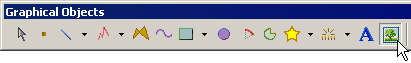
Open the Open dialog box.
To define your own dimensions for the image object's selection box, click the panel a second time to set the image object's diagonally opposite end point.
To insert the image with its default width and height dimensions, press SHIFT and then click the panel.
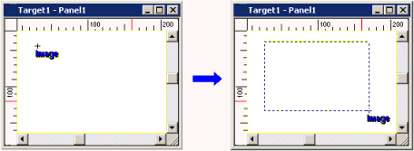
When the Open dialog box opens, find and select the image that you want to display on the panel, then click Open.
The image is displayed on the panel in the user-defined selection box.
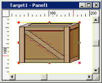
Right-click the panel to set the image object.
Modify the attributes of the image object in the Property Inspector.
The following table describes the Image Object's properties.
|
Property |
Description |
|
Name |
The object's name. Whenever an object is created, a default name is generated. When renaming an object, its name must be unique within the target, must contain no more than 32 valid characters, and must follow the naming conventions. For details, see Appendix 9, Naming Conventions. |
|
Top |
The coordinates, in pixels, of the top-left corner of the object.
By changing these properties, the graphical object can be moved up, down, left, and right.
|
|
Left |
|
|
Width |
The width and height of the object's selection box can be set from 1 to 3000 pixels. |
|
Height |
|
|
File Name |
The object's path and file name. The ellipsis button |
|
File Size |
The object's file size, in kilobytes (KB). This property is a read-only property. |
|
Display Mode |
The method used to display the image file within the dimensions of the image object's selection box—Proportional Stretch, Stretch, or Clipping. Proportional Stretch. Enlarges or reduces the overall size of the image object while keeping its proportions intact. 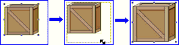 Stretch. Enlarges or reduces the size of the image object's height and width without maintaining its original proportions. 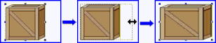 Clipping. Displays the original image file, from its top-left corner, within the dimensions of the user-defined selection box. If the height or width of the image object's selection box is greater than that of the original image file, the selection box's dimensions will be reduced—will snap back—to fit either or both of those dimensions. 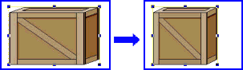 If the height or width of the image object's selection box is less than that of the original image file, only that portion of the original image file's top-left corner will be displayed in the selection box. 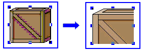 |
|
Mirror |
The method used to display mirror images of the object—None, X-Axis, Y-Axis, or X- and Y-Axis. The Mirror property is available only when the original image is a Bitmap or JPEG file. When an image has been set up as a mirrored representation of its original, you might sometimes experience slowness when applying one of the DisplayMode settings.
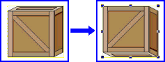
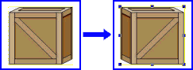
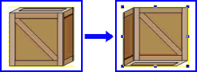 |
|
Transparent Color |
Transparent Color settings are available only for Bitmap, JPEG, and PNG image files.
Select the Transparent Color checkbox, then click the Color box to access the Color dialog box. In the Color dialog box, choose a color that will become transparent in the image:
For information on selecting colors, see Section 7.3.1, Color Palette.
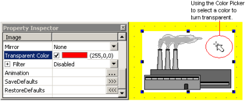 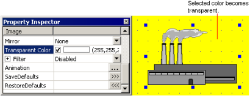 |
|
Filter |
The image object's color filtration property is available only for Bitmap, JPEG, JPG, EMF, PNG image files When Enabled, the following constraints, or filters, can be applied to the image file.
|
|
Animation |
The ellipsis button For details, see Chapter 8, Animating Graphics.
|
|
Save Defaults |
The forward-arrow button saves the current property settings as the new default property settings. |
|
Restore Defaults |
The back-arrow button |
|
Placeholder |
You can assign a placeholder in any property that requires a variable definition. Click the ellipsis to open the Placeholders dialog box and edit the variable placeholder for the object. The dialog box only displays if you had set up a placeholder for the object. For more information on placeholders, see Section 21.2.4, Working with Variable Placeholders. |
Right-click the image to be returned to its original size, and select "Back to Original Size" from the displayed shortcut menu.
The image will be changed to its original size, and the graphic will be displayed at full scale.